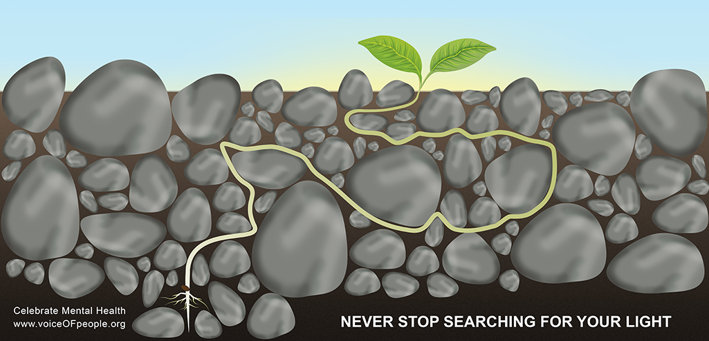
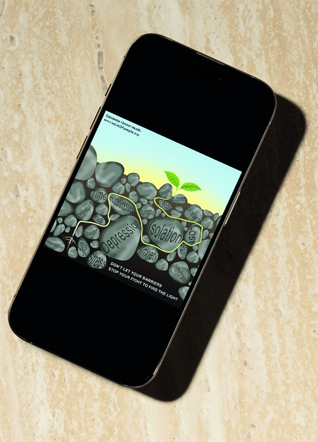

Mental Health Campaign
Client: voiceOFpeople.org (fictitious)
This campaign aims to raise awareness, reduce stigma, and inspire proactive engagement around mental health through three cohesive yet unique designs of a billboard, vertical banner, and social media ad. Executed using Adobe Photoshop and Illustrator.

